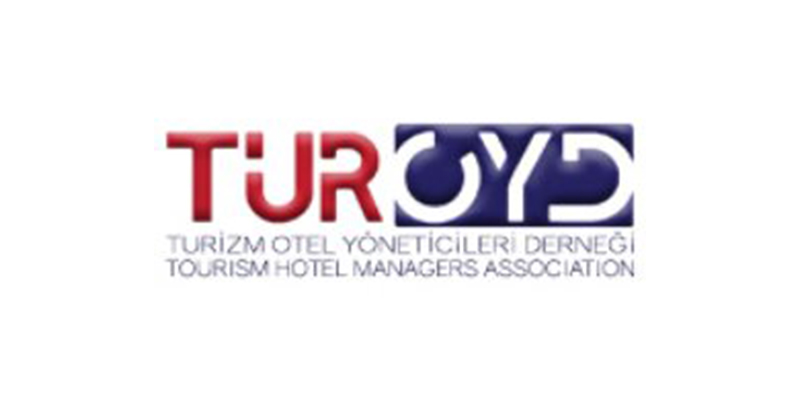

GASTROMASA 2026’YA KALAN SÜRE
Gastromasa 2026 başladı.

DÜNYA MUTFAĞINDAN İSİMLER
Konuşmacılar
İlham veren isimleri yakından tanıyın.
İKİ GÜN. ÜÇ SAHNE. SINIRSIZ İLHAM.
Konferans programı
Kendi rotanızı oluşturun.
İlhamın peşinden gidin.
Programda değişiklik yapılabilir. Saatler Türkiye yerel saatidir.
Hakkında
GASTRONOMİ VE TURİZMİN KÜRESEL BULUŞMASI
Gastronomi ve turizm profesyonellerini, dünyaca ünlü şefleri, yatırımcıları, sektör liderlerini ve dünyanın önde gelen markalarını bir araya getiren Gastromasa, 26–27 Kasım 2026 tarihlerinde İstanbul Haliç Kongre Merkezi’nde 11. kez düzenlenecek.
Gastromasa Kurucusu ve Sözen Group CEO’su Gökmen Sözen’in öncülüğünde, bu yıl “Kültür ve Etkileşim” temasıyla gerçekleşecek etkinlik; konuşmalar, paneller, canlı gastronomi deneyimleri, yarışmalar, atölyeler, sergi alanları ve profesyonel buluşma olanaklarıyla ilhama, etkileşime ve yeni iş birliklerine ev sahipliği yapacak.
Dünyaca ünlü şefler, uluslararası konuşmacılar ve sektörün öncü isimleri.
BİRLİKTE DAHA FAZLASI
Partnerlerimiz
Gastronominin buluşmasına
değer katan markalar ve kuruluşlar.
01Ana Sponsor


02Resmi Havayolu Partneri

03Gold Partner


04Profesyonel Mutfak Partneri
05Sofra Üstü Ekipman Partneri

06Hijyen Partneri

07Sivil Toplum Kuruluşları





08Katılımcı Firmalar


GASTROMASA
Basında Biz
Basın haberleri ve yayınlar yakında burada yer alacak.
HALİÇ KONGRE MERKEZİ
Kroki.
Sahneleri ve etkinlik alanını keşfedin.

Yakınlaştırdıktan sonra krokide yatay ve dikey kaydırabilirsiniz.
İSTANBUL’UN KALBİNDE